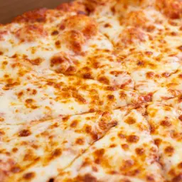

Pizza

With the right kind of homemade dough solving a pizza craving is easy
It starts with the right ingredients and a passion for pizza
Before you know it you'll have everyone begging you to deliver instead of the local pizzeria
Ingredients
- 1 1/2 cups (355 ml) warm water (105°F-115°F)
- 1 package (2 1/4 teaspoons) active dry yeast
- 3 3/4 cups (490g) bread flour
- 2 tablespoons extra virgin olive oil (omit if cooking pizza in a wood-fired pizza oven)
- 2 teaspoons kosher salt
- 1 teaspoon sugar
Steps
- Proof the yeast
- Make and knead the pizza dough
- Let the dough rise
- Preheat the pizza stone
- Divide the dough into 2 balls
- Prep the toppings
- Flatten the dough ball, and stretch out into a round
- Brush the dough top with olive oil
- Sprinkle the pizza peel with cornmeal, put flattened dough on top
- Spread with tomato sauce and sprinkle with toppings
- Slide pizza into the oven
- Bake